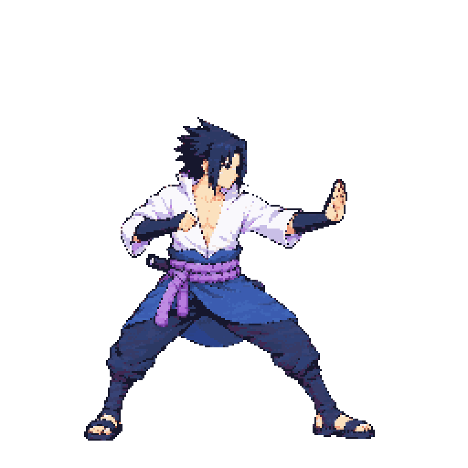
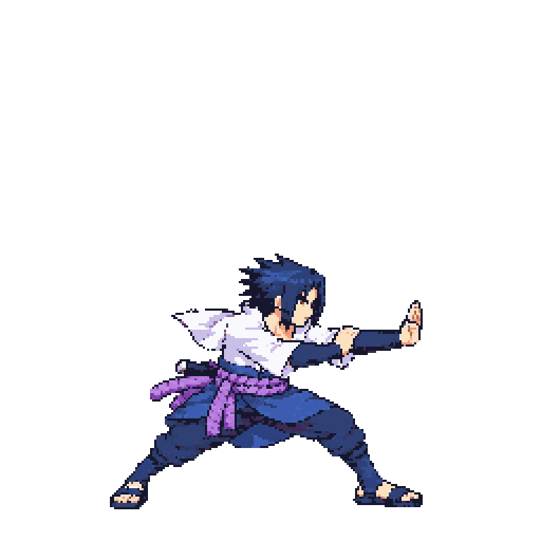
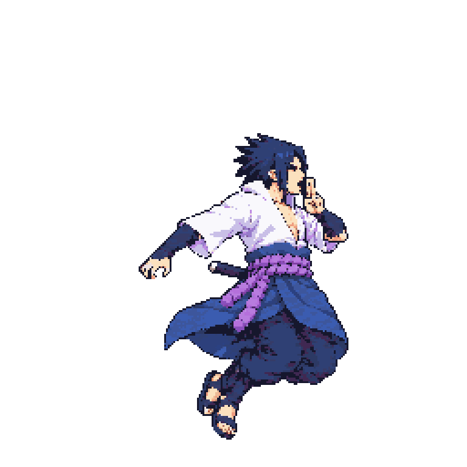
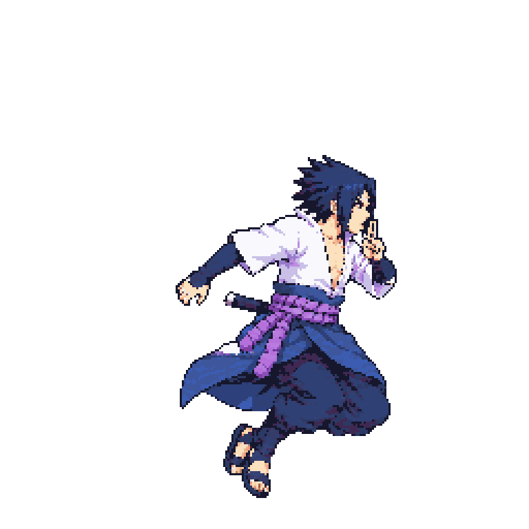
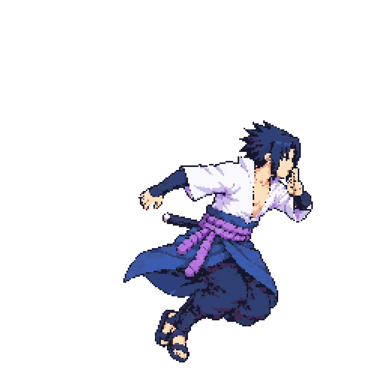
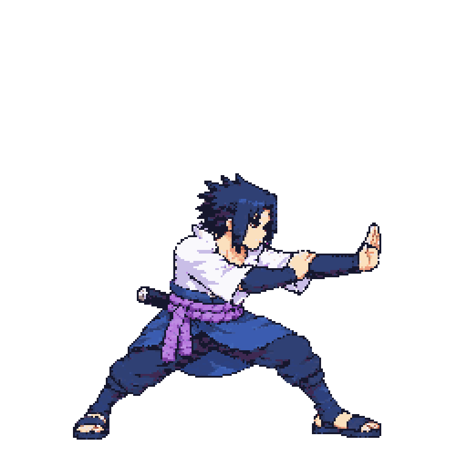

Approved idle f0

beamStruggle v03 — technical holdNot an approval request. v03 is a no-call body-height calibration from approved v01 source pixels. The intended sash-width endpoints are unclear, so manual scale QA remains pending. Approved v01 remains the production reference.
Comparison sources: packed baseline sheet 40AB6E099DD4C0201A072F1666CDF1696751A7EDCB578D8A4A6DCC4B872BE873; diagnostic candidate sheet at bodyHeight 146 F986CBDC5E9B1D48EF0B125DEB00CA4B71D4D200EEABE06D5464D456D23188BB. All crops are one packed cell at 3× nearest-neighbor.








The playable preview cycles the three diagnostic frames at 70 ms per frame. It is not in the game atlas. Measurement notes and hashes: Sasuke v03 technical record.